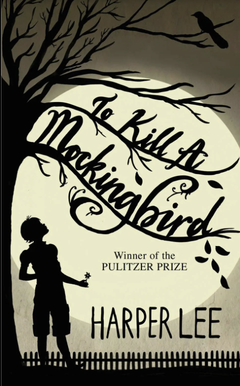
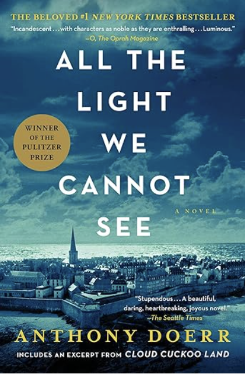

I took a trip to Shanghai, China this summer. I used to live in Beijing, north part of China.
The Shanghai trip I took this summer was a business trip. And I fell in love with Shanghai.
The weather there is mild, the sky is blue and clear. There are high-developing finance, global trading business. People's lives there seem flourishing.
Shake Shack is my favorite because its shake burger is soooo good.
I am a huge fan of burger. And I love ordering food delivery.
Shake Shack makes it possible to have delicious burger without leaving my place.
I love hamburger in the restaurant or from anywhere fresh.
But I hate frozen version of fast-heated hamburger that sold in the supermarket.
| To Kill A Mocking Bird | 1984 | Thinking, Fast and Slow | All the Light We Cannot See |
|---|---|---|---|
|  |
|
|
 |
| Harper Lee | George Orwell | Daniel Kahneman | Anthony Doerr |
| In To Kill a Mockingbird, Scout Finch lives in the small Southern town of Maycomb during the 1930s, where her father, Atticus, defends Tom Robinson, a Black man falsely accused of raping a white woman, Mayella Ewell. As the trial unfolds, Scout and her brother Jem witness the town's deep-seated racism and the unfair conviction of Robinson, despite clear evidence of his innocence. Meanwhile, they befriend a reclusive neighbor, Boo Radley, who ultimately saves them from an attack by Mayella’s vengeful father, Bob Ewell. | In 1984 by George Orwell, Winston Smith lives under the oppressive rule of the Party, led by the omnipresent Big Brother, in a dystopian future where individuality and free thought are suppressed. Winston begins a secret rebellion, falling in love with Julia and seeking truth through forbidden thoughts, but they are eventually betrayed and captured by the Thought Police. Under brutal torture, Winston is forced to betray Julia and conform to the Party’s will, ultimately losing his individuality and love for freedom, and accepting Big Brother’s total control. | Daniel Kahneman takes us on a groundbreaking tour of the mind and explains the two systems that drive the way we think. | A blind French girl and a German boy whose paths collide in occupied France as both try to survive the devastation of World War II. |